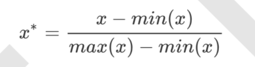
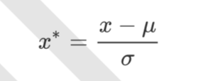
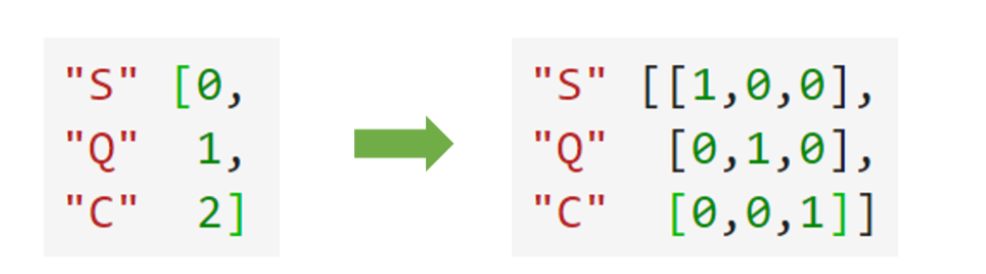
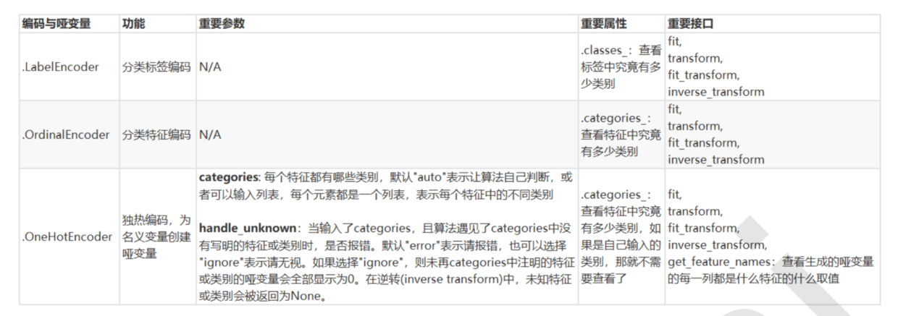

数据挖掘的流程
- 获取数据
- 数据预处理：从数据中检测，纠正或删除损坏，不准确或不适用于模型的记录过程。
- 特征工程：特征工程是将原始数据转换为更能代表预测模型的潜在问题的特征的过程，可以通过挑选最相关的特征，提取特征以及创造特征来实现。
- 建模
- 上线、验证
数据无量纲化
在机器学习算法实践中，我们往往有着将不同规格的数据转换到同一规格，或不同分布的数据转换到某个特定分布 的需求，这种需求统称为将数据“无量纲化”。- 线性的无量纲化
- 中心化
- 缩放
- 非线性的无量纲化
数据归一化（异常值敏感）
当数据(x)按照最小值中心化后，再按极差(最大值 - 最小值)缩放，数据移动了最小值个单位，并且会被收敛到 [0,1]之间。
1
2
3
4
5
6
7
8from sklearn.preprocessing import MinMaxScaler
scaler = MinMaxScaler(feature_range=[5,10]) # scaler后5~10之间，默认 0~1
result = scaler.fit(data)
result = scaler.transform(data)
# 一步达成
result_ = scaler.fit_transform(data)
# 逆转
scaler.inverse_transform(result)数据标准化(优先选用)
当数据(x)按均值(μ)中心化后，再按标准差(σ)缩放，数据就会服从为均值为0，方差为1的正态分布(即标准正态分布)
1
2
3
4
5
6
7
8from sklearn.preprocessing import StandardScaler
scaler = StandardScaler()
scaler.fit(data)
print(scaler.mean_)
print(scaler.var_)
res = scaler.transform(data)
res.mean()
res.std()
- 线性的无量纲化

处理缺失值
impute.SimpleImputer(missing_values=nan, strategy=’mean’, fill_value=None, verbose=0, copy=True)
- missing_values ：缺失数据的值
- strategy：填补策略
- mean：均值填补(仅对数值型特征可用)
- median：中值填补(仅对数值型特征可用)
- most_frequent：众数填补(对数值型和字符型特征都可用)
- constant：参考参数“fill_value”中的值(对数值型和字符型特征都可用)
- fill_value：填补值
copy： 创建副本
1
2
3
4from sklearn.impute import SimpleImputer
im = SimpleImputer(strategy='median')
im.fit(age)
im.transform(age)
使用pandas处理
1
2data.loc[:,"Age"] = data.loc[:,"Age"].fillna(data.loc[:,"Age"].median())
data.dropna(axis=0,inplace=True) #删除行
处理分类型特征
编码： 文字型数据转化为数字型数据。
哑变量：它是人为虚设的变量，来反映某个变量的相互独立的不同属性。（比如身份：学生、工人、教师）preprocessing.LabelEncoder: 标签y专用，将分类转化为分类数值
1
2
3
4from sklearn.preprocessing import LabelEncoder
y = data.Survived
le = LabelEncoder()
data.Survived=le.fit_transform(y)preprocessing.LabelBinarizer: 标签y专用，将分类转化为哑变量
preprocessing.OrdinalEncoder: 特征X专用，将分类特征转化为分类数值 (如果特征的值有关联性，处理有序变量)
1
2
3
4from sklearn.preprocessing import OrdinalEncoder
x = data.Embarked
le = OrdinalEncoder()
data.Embarked=le.fit_transform(x.values.reshape(-1,1))preprocessing.OneHotEncoder: 独热编码，创建哑变量 （特征的值无关关联性，处理名义变量）
1
2
3
4
5
6
7from sklearn.preprocessing import OneHotEncoder
xs = data.loc[:,['Sex','Embarked']]
one= OneHotEncoder()
res= one.fit(xs)
columns = res.get_feature_names() #查看类型名称
res= one.transform(xs).toarray()
newdata = pd.concat([data,pd.DataFrame(res,columns=columns)],axis=1)
处理连续性变量
二值化：根据阈值将数据二值化，分为0/1。
分段：连续型变量划分为分类变量的类，能够将连续型变量排序后按顺序分箱后编码。preprocessing.Binarizer: 根据阈值将数据二值化
1
2
3
4from sklearn.preprocessing import Binarizer
x = data2.Age.values.reshape(-1,1)
bins = Binarizer(threshold=30) # 阈值=30
res = bins.fit_transform(x)preprocessing.KBinsDiscretizer: 将连续性变量排序后分箱
参数：- n_bins: 每个特征中分箱的个数。默认5。 - encode: 编码方式 - onehot: 哑变量，返回一个稀疏数组 - ordinal: 每个特征中每个箱都被编码为一个整数 - onehot-dense: 哑变量，返回密集数组 - strategy: 定义箱框的方式 - uniform: 等宽分箱 - quantile: 等位分箱，每个箱内样本数量相同（默认） - kmeans: 按聚类分箱1
2
3
4
5
6
7from sklearn.preprocessing import KBinsDiscretizer
X = data.Age.values.reshape(-1,1)
est = KBinsDiscretizer(n_bins=3, encode='ordinal', strategy='uniform')
est.fit_transform(X)
#查看转换后分的箱:变成了一列中的三箱 set(est.fit_transform(X).ravel())
est = KBinsDiscretizer(n_bins=3, encode='onehot', strategy='uniform') #查看转换后分的箱:变成了哑变量
est.fit_transform(X).toarray()